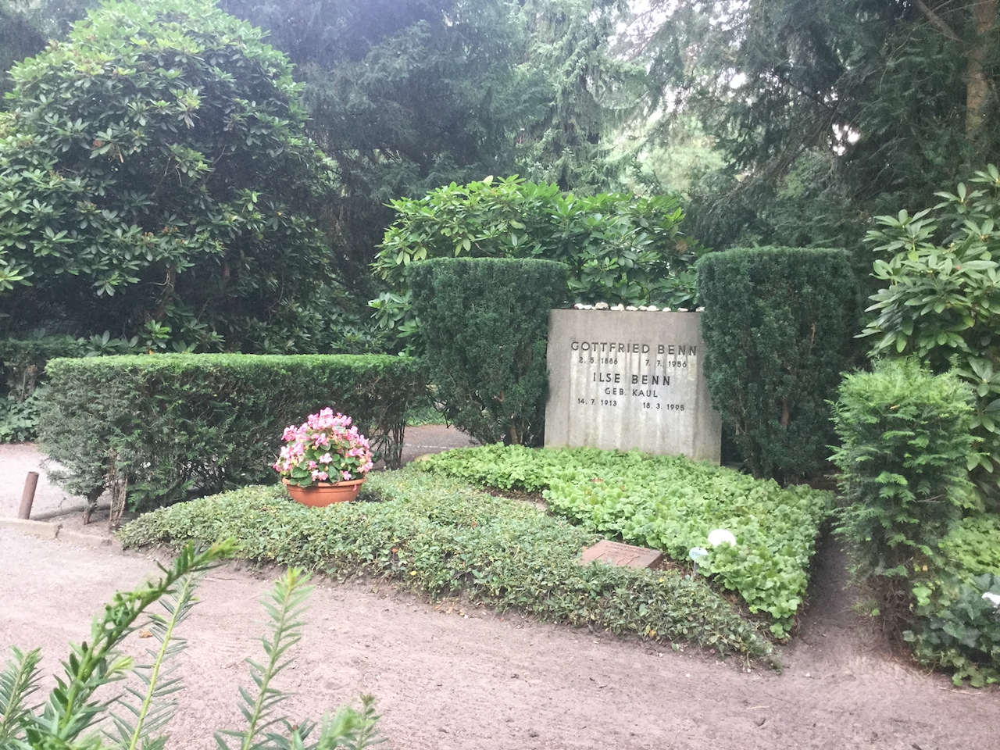
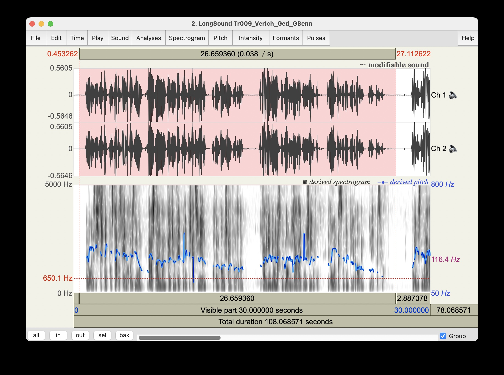
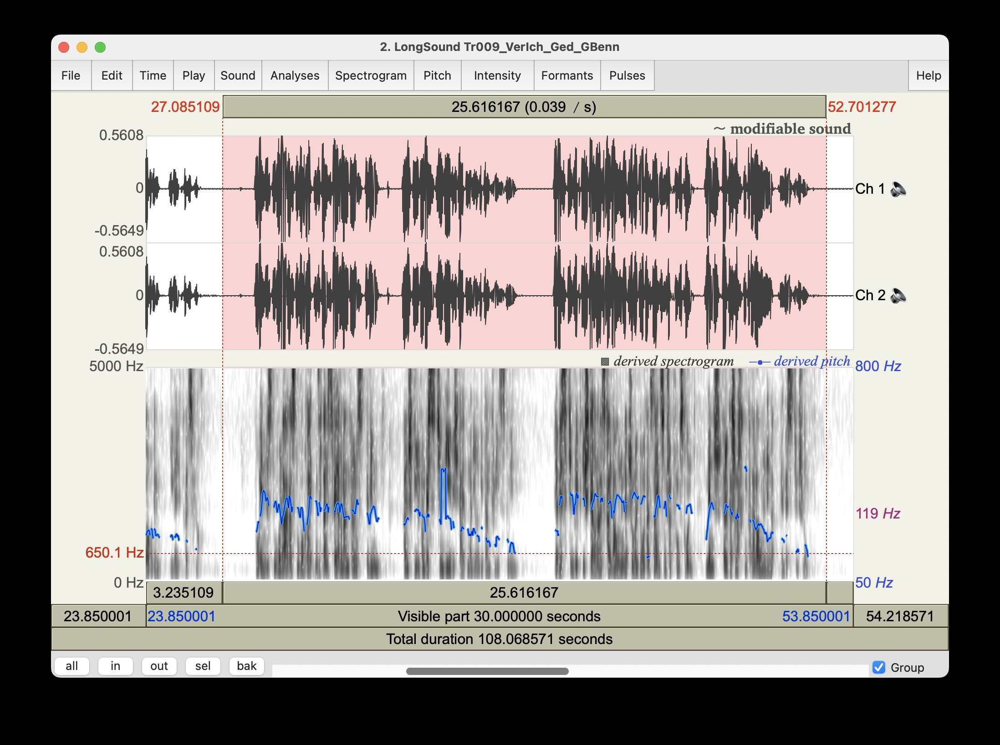
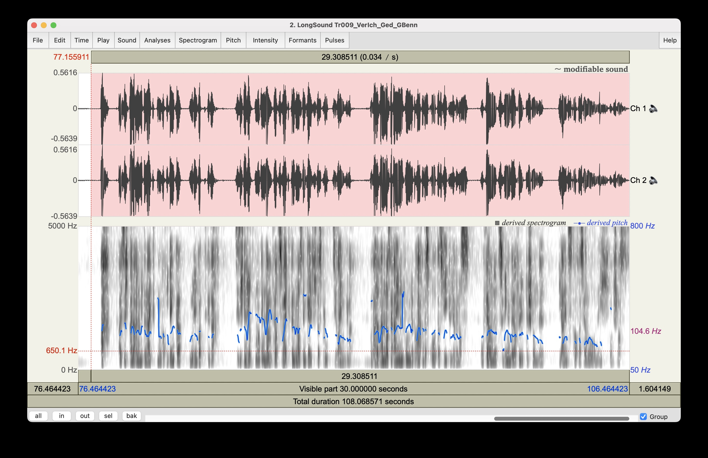
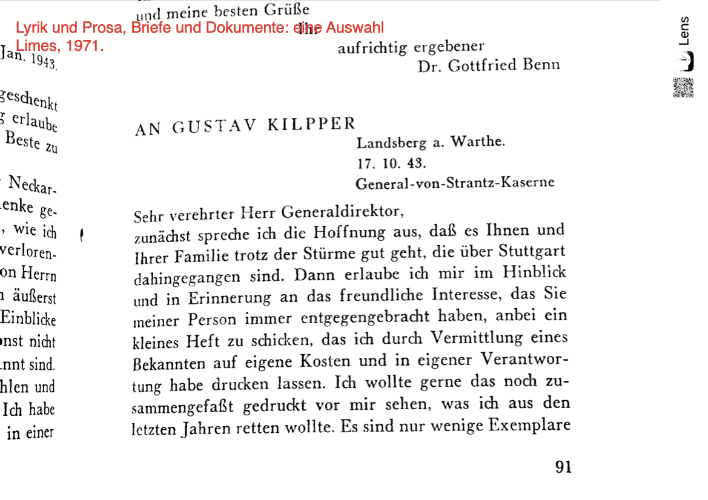
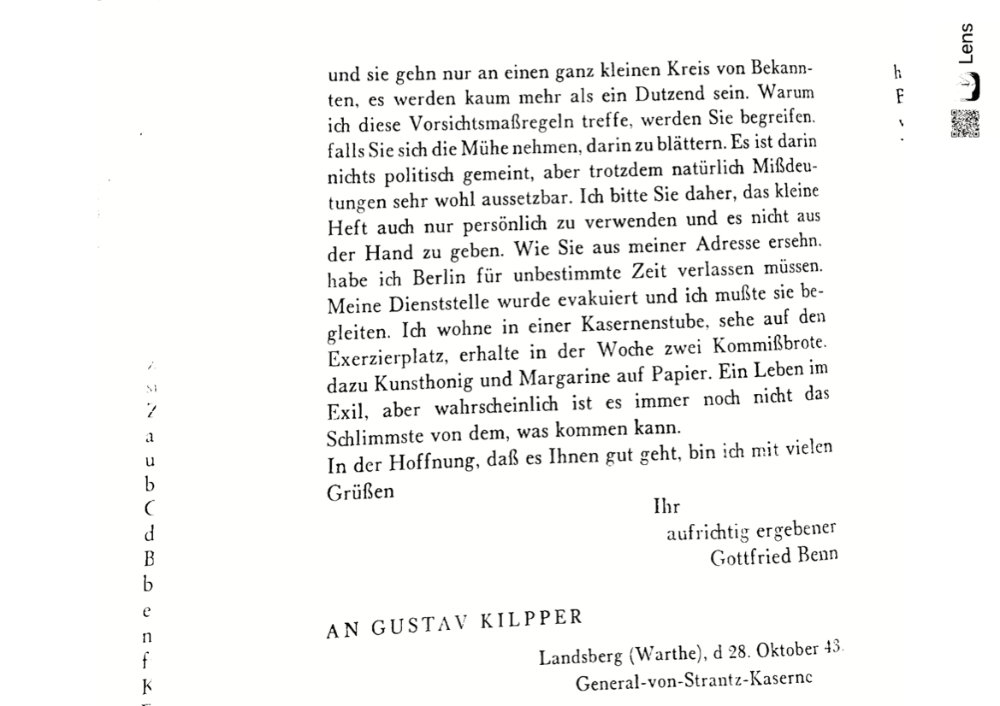

[1] "engine on..."AVL / Nietzsche: Benn
Gottfried Benn: Verlorenes Ich
class: [16719] Nietzsche und Nietzscherezeption :: tutor: friederike günther :: term: SS26 snc: 16163.1
index
benn: *-05-02
:: 140 jahre german dionys::
der pastorensohn
…und gott::
Q: das läszt sich nicht mehr eruieren. ein zeitungsblatt (walter lenning, 1970-05-02) in einem nachgelassenen benn buch.
gemeinfrei: 2026-12-31

play
1-2: benn/benn ©Zweitausendeins
3-5: kinski/nietzsche ©hörverlag
analysis: pitch, spectrogram



Q: praat link to programm
interpretation?
- 2 pitch peaks, massive down end.
16192.benn.VI
das wird kein thesenpapier zum verlorenen ich. das wird nur die vorbereitung des samstag, 2. mai 2026…, dem 140. geburtstag benns.
- aufstehn: 0314
- temperatur: 16°
- dunkel, amsel. autobahn. paperboys.
- flitz: das lesen.
samling
list of digital and analogue registrates
primaere
secundaere
es sieht so aus, als wenn die beschäftigung vorbereitet war.
1997, die barke. linktree: dtv, lyrik des expressionistischen jahrzehnts (Benn (1962)), paperobject, flomarkt vor dem rathaus schöneberg. also bayrisches viertel. also benn, cirque fermee. seitdem.
benn 1886, pastorensohn, westpriegnitz. theologie/philologie, marburg etc., dann medizin, berlin. seitdem.
pathologie: krankenhaus westend, städt. krankenhaus sophie-charlottenstrasze. in diesem radius bewege seit 20 jahren zwischen friedhof-autobahn. cirque fermee.
militärarzt, militär kein-arzt, dichten als notwendigkeit. die morgue.
praxis friedenau arzt für geschlechtskrankheiten. dichten als notwendigkeit. europas geschlechte. die syphilis von berlin.
1907 liest nietzsche. erkennt sich. das geistergespräch: mit sich im andern reden. vor allem mit sich über die griechen und den niedergang des abendlands. (Hertel (2017))
pause. order items chronologically. der erste weltkrieg, der zweite weltkrieg. fanatismus, ausschlusz, rehabilitation. immerwieder auch “rasse”.
Wolf (2021) - warum muss e. lasker-schüler ein gegensatz sein von jüdisch / deutsch […] (benns totenrede als klappentext.)
generell seine liebschaften, buch d. könige (Theweleit (1988)), an u. ziebarths wohnung immer vorbeigeschlichen, bis auch sie dann als letzte usw.; u. ziebarth 1 urne in DIII, aber es wird noch andere geben vielleicht. cirque fermee.
auch zehlendorf: zum geburtstag blühende waldsteinia (bodendeckende dauerbepflanzung) und violen (wechselbepflanzung) zum todestag die begonien (auch im wechsel, schale.) die eibenhecke gepflegt, ehrengrab (roter ton), nebenan wer weisz das schon aus welchen gründen hier liegen…
und das verlorene Ich?
das war nur der klappentext. ich bin noch nicht in der lage, leidenschaft in wissenschaft zu verwandeln.
es könnte immerhin sein, dasz dieser Brief (s.u.) mit bezug auf den privatdruck einer kleinen sammlung 22 gedichte auch zum verlorenen ich führt.


Q: Benn (1971)
die statischen gedichte, als deren teil unser behandeltes gedicht dann schlieszlich 1948 veröffentlicht wurde, sind benns (gedankenlyrik), “elegische Bestimmung und Beschwörung einer Endzeit; das Poetologische; das Religiöse; und die Zeitgeschichte, vor allem der Triumph der Kunst über die Geschichte” (Hanna and Reents (2016)) bestimmen das sujet.
thesen?
das dorische: faszination, besser: [nietzsche-fanatische] begeisterung für dionys. auch hier fortwährend konflikt zu spüren. benns apoll: quanten, neuronen, synapsen, generell: haut- und geschlechtskrankheiten. das atom. lyrik im essay. sprache ist nur interessant, sofern sie beides hat.
references
Benn, Gottfried. 1957. Ausgewählte Briefe. Limes-Verl.
Benn, Gottfried. 1958. Gesammelte Werke. 2, Prosa Und Szenen. Edited by Wellershoff. Vol. 2. Gesammelte Werke.
Benn, Gottfried. 1960. Gesammelte Werke. 3, Gedichte. Edited by Wellershoff. Vol. 3. Gesammelte Werke.
Benn, Gottfried. 1962. Lyrik Des Expressionistischen Jahrzehnts: Von Den Wegbereitern Bis Zum Dada. Dtv-Sonderreihe 4. Dt.Taschenbuch Verl.
Benn, Gottfried. 1966. Den Traum Alleine Tragen: Neue Texte, Briefe, Dokumente. Limes-Verl.
Benn, Gottfried. 1971. Lyrik Und Prosa, Briefe Und Dokumente: Eine Auswahl. 8., erw. Aufl. Limes-Paperback. Limes-Verl.
Benn, Gottfried. 1982. Gesammelte Werke in Der Fassung Der Erstdrucke. [1], Gedichte in Der Fassung Der Erstdrucke. Edited by Hillebrandt. Fischer-Taschenbücher 5231.
Benn, Gottfried. 1989. Gesammelte Werke in Der Fassung Der Erstdrucke. [3], Essays Und Reden in Der Fassung Der Erstdrucke. 1. Auflage. Edited by Hillebrandt. Fischer Taschenbücher 5233.
Benn, Gottfried. 1990. Gesammelte Werke in Der Fassung Der Erstdrucke. 4, Szenen Und Schriften in Der Fassung Der Erstdrucke. Edited by Hillebrandt. Fischer-Taschenbücher 5234.
Hanna, Christian M., and Friederike Reents. 2016. Benn-Handbuch: Leben, Werk, Wirkung. 1. Aufl. 2016 edition. J.B. Metzler Verlag. https://doi.org/10.1007/978-3-476-05310-7.
Hertel, Thomas. 2017. “Ein Modernes ›Geistergespräch‹: Gottfried Benns Auseinandersetzung Mit Gedichten von Friedrich Nietzsche.” In Nietzsche Und Die Lyrik: Ein Kompendium, edited by Christian Benne and Claus Zittel. J.B. Metzler. https://doi.org/10.1007/978-3-476-05596-5_34.
Koch, Thilo. 1970. Gottfried Benn: Ein Biographischer Essay Mit Neuen Texten, Briefen Und Einem Nachwort 1970. Dtv 707. Dt. Taschenbuch-Verl.
Theweleit, Klaus. 1988. Buch Der Könige. Stroemfeld/Roter Stern.
Wolf, Uljana. 2021. Etymologischer Gossip: Essays Und Reden / Uljana Wolf. 1. Auflage. Kookbooks Reihe Essay 7. Kookbooks.